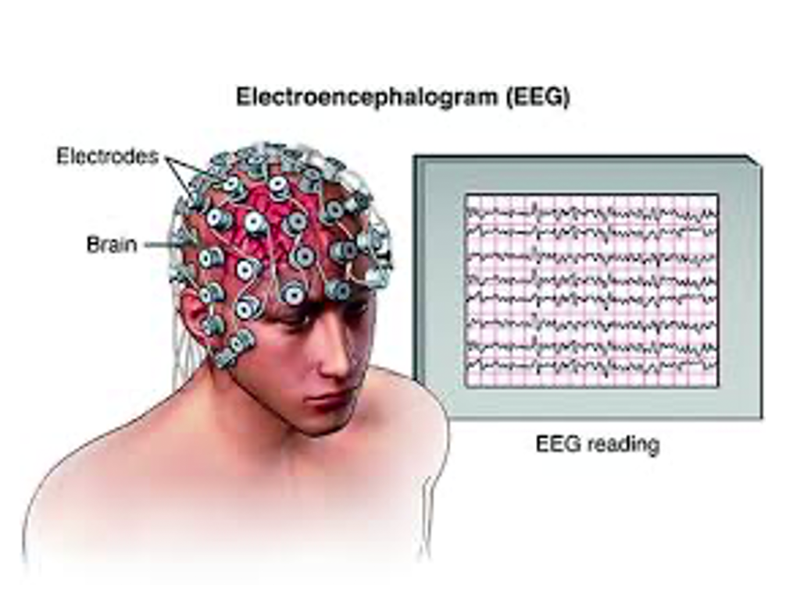

The electroencephalogram (EEG) measures neural electrical activity from the brain that appears on the scalp. Event-related potentials (ERPs) are the brain’s response (measured by the EEG) to some form of stimulus (in our case, a short auditory tone). The odd-ball paradigm intersperses infrequent (deviant) stimuli amongst more frequent (standard) stimuli. The mismatched negativity (MMN) component occurs in response to a deviant stimulus (see figure below).
Previous work, e.g. [1,2], has shown that the existence of the MMN component in the deviant response of a coma patient has a high predictive value for emergence from coma. The difficulty is that the MMN component is difficult to detect in the presence of background EEG noise at the best of times, and even more so in a coma patient. The result is that there exists a significant chance of emergence even if the patient’s MMN component is not visible.
EEG responses to standard (red) and deviant (blue) stimuli. In this case, the MMN peak is clearly evident. However in many other cases it is difficult to distinguish between the two types of responses.
The purpose of this study is to use machine learning methods to improve detectability of the MMN component and therefore provide a high-accuracy clinical tool with both high specificity and high sensitivity for determining prognosis for emergence from coma. Details are presented in [3].
We also intend to use machine learning methods to diagnose and characterize other forms of disorders of consciousness, such as vegetative state, minimally conscious state, and concussion.
The study is funded by a major collaborative health research project (CHRP) grant, sponsored by NSERC and CIHR.
This is a multi—disciplinary study, consisting of the following researchers:
Prof. John Connolly, Professor, Dept. of Linguistics and Languages, McMaster.
Prof. Jim Reilly, Dept. of Elec. and Comp Eng, McMaster.
Dr. Richard Kolesar, Anesthesiologist with Hamilton Health Sciences.
Dr. Paniz Tavakoli, Post-doctoral fellow, McMaster University.
Dr. Elham Bagheri, Post-doctoral fellow, McMaster University.
Adianes Herrera Diaz, PhD. Candidate, Dept. of Linguistics and Languages, McMaster
Zhongda Zhang, Master’s Candidate, Dept. of Elec. and Comp. Eng, McMaster.
References
[1] Fischer, Catherine, Dominique Morlet, and Marie-Hélène Giard. "Mismatch negativity and N100 in comatose patients." Audiology and Neurotology 5.3-4 (2000): 192-197.
[2] Fischer C, Luauté J, Adeleine P, Morlet D. Predictive value of sensory and cognitive evoked potentials for awakening from coma. Neurology. 2004 Aug 24;63(4):669-73.
[3] Armanfard, Narges, Majid Komeili, James P. Reilly, and John F. Connolly. "A machine learning framework for automatic and continuous MMN detection with preliminary results for coma outcome prediction." IEEE journal of biomedical and health informatics 23, no. 4 (2018): 1794-1804.